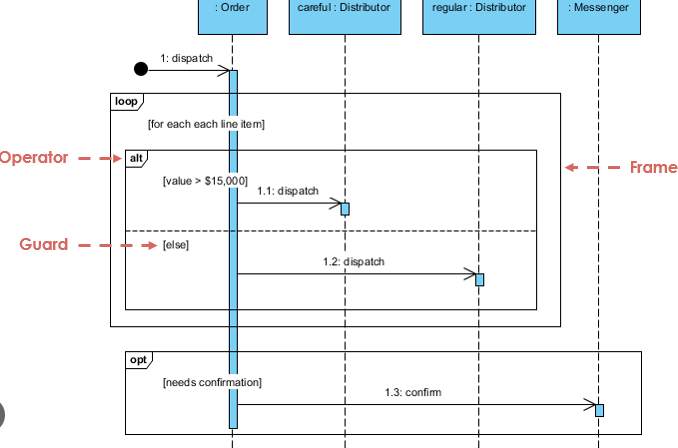

Sequence Diagram
Sequence diagram näitab objektide vahelist suhtlust
ning sõnumite liikumist ajas.
Kus kasutatakse?
- Süsteemi tööprotsessi kirjeldamisel
- API suhtluse modelleerimisel
- Objektide koostöö näitamisel
Peamised elemendid
- Lifeline – objekti elujoon
- Message – sõnum
- Activation – tegevuse periood

Tagasi UML indeksisse